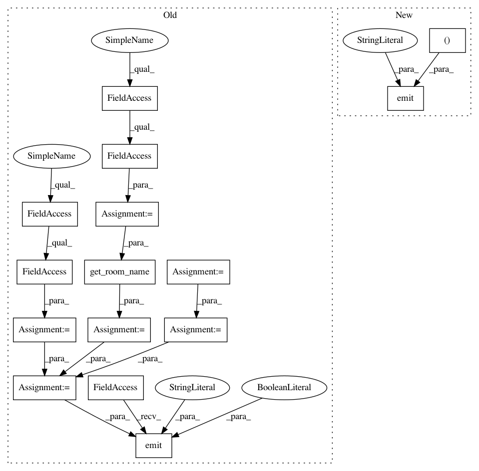

bb547d43af8d4e4d13b8c70662924895ae953215,dino/api.py,,on_leave,#Any#Any#,453
Before Change
:return: if ok: {"status_code": 200}, else: {"status_code": 400, "data": "<some error message>"}
// todo: should handle invisibility here? don"t broadcast leaving a room if invisible
user_id = activity.actor.id
user_name = environ.env.session.get(SessionKeys.user_name.value)
room_id = activity.target.id
room_name = utils.get_room_name(room_id)
utils.remove_user_from_room(user_id, user_name, room_id)
activity_left = utils.activity_for_leave(user_id, user_name, room_id, room_name)
environ.env.emit("gn_user_left", activity_left, room=room_id, broadcast=True, include_self=False)
return ECodes.OK, None
After Change
:param activity: the parsed activity, supplied by @pre_process decorator, NOT by calling endpoint
:return: if ok: {"status_code": 200}, else: {"status_code": 400, "data": "<some error message>"}
environ.env.observer.emit("on_leave", (data, activity))
return ECodes.OK, None
def on_disconnect() -> (int, None):
In pattern: SUPERPATTERN
Frequency: 3
Non-data size: 15
Instances
Project Name: thenetcircle/dino
Commit Name: bb547d43af8d4e4d13b8c70662924895ae953215
Time: 2016-12-12
Author: oscar.eriks@gmail.com
File Name: dino/api.py
Class Name:
Method Name: on_leave
Project Name: thenetcircle/dino
Commit Name: bb547d43af8d4e4d13b8c70662924895ae953215
Time: 2016-12-12
Author: oscar.eriks@gmail.com
File Name: dino/api.py
Class Name:
Method Name: on_leave
Project Name: thenetcircle/dino
Commit Name: bb547d43af8d4e4d13b8c70662924895ae953215
Time: 2016-12-12
Author: oscar.eriks@gmail.com
File Name: dino/api.py
Class Name:
Method Name: on_invite
Project Name: thenetcircle/dino
Commit Name: bb547d43af8d4e4d13b8c70662924895ae953215
Time: 2016-12-12
Author: oscar.eriks@gmail.com
File Name: dino/api.py
Class Name:
Method Name: on_whisper